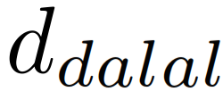
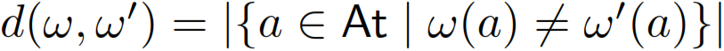
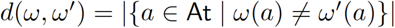
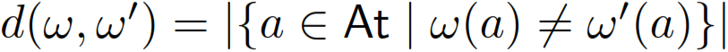

The Dalal distance  is a distance function for interpretations in and is defined as  for all . Then the Dalal-hit inconsistency measure is defined as (let ) The Dalal-hit inconsistency measure has been proposed in [Grant:2013].
 and is defined as  for all
and is defined as  for all  . Then the Dalal-hit inconsistency measure
. Then the Dalal-hit inconsistency measure  is defined as (let
is defined as (let  )
)